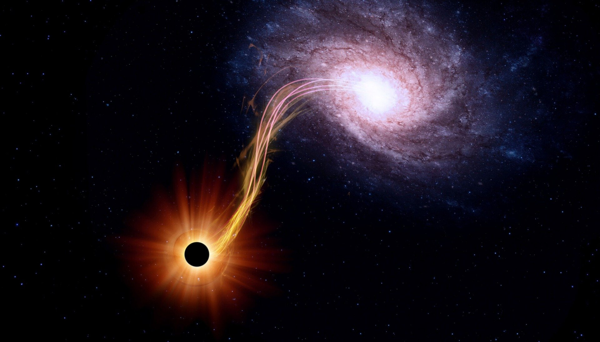

الفيزياء الفلكية :-
فرع من أفرع علم الفلك التي توظف مبادئ الفيزياء والكيمياء لدراسة طبيعة الأجسام الفلكية، فضلا عن مواقعها وحركتها في الفضاء .
تُعنى الفيزياء الفلكيّة بدراسة القوانين الفيزيائية المتعلقة بالكون وربطها مع بعضها مثل الخصائص الفيزيائية كالكثافة، ودرجة الحرارة للكواكب، والتراكيب الكيميائية للأجرام الفلكية، وللتوضيح يقوم عالم الفضاء بجمع المعلومات حول الكون بأدواته الخاصة، أمّا علماء الفيزياء الفلكية فيأخذون هذه المعلومات ويطبّقونها على بعض القوانين ليفهموا كيفية حدوث هذه الظواهر الكونية، حيث يتم أخذ مجالات محددة من الفيزياء وربطها بالفلك مثل: الميكانيكا، والنظرية النسبيّة، وميكانيكا الكم ، كما تمتلك الفيزياء الفلكية عِلمَين يشبهانها بشكل كبير، هما علم الكواكب، والذي يختص بدراسة الكواكب والأبعاد في مجرة درب التبّانة، وعلم الكونيات الذي يقوم بدراسة تركيبة الكون والمجرّات الخارجية.
عمليا ، تنطوي الأبحاث الفلكية الحديثة على قدر كبير من أفرع الفيزياء النظرية والرصدية.
فبعض حقول الفيزياء الفلكية تتضمن محاولات لتحديد خصائص المادة المظلمة، الطاقة المظلمة ، والثقوب السوداء ، وما إذا كان السفر عبر الزمن ممكنا ، أو إمكانية تكون ثقوب دودية ، أو إمكانية وجود أكوان موازية
.
كما تدرس الفيزياء الفلكية النظرية مواضيعاً مثل ولادة النظام الشمسي وتطوره، ولادة المجرات وتطورها ، أصل الأشعة الكونية ، النسبية العامة والفيزياء الكونية ، وكذلك فيزياء الأوتار الكونية وفيزياء الجسيمات الفلكية.
ويمكن معرفة الكثير عن الطبيعة المادية للأجرام السماوية عن طريق دراسة الأطوال الموجية للموجات الكهرومغناطيسية التي تُطلقها.
وعلى سبيل المثال يعطي تحليل نمط الأطوال الموجية التي ينتجها الضوء القادم من أي نجمٍ معلومات عن كثافته ودرجة حرارته ، ويمكن مثل هذا التحليل الطيفي الفيزيائيين الفلكيين أيضًا من تحديد العناصر الكيميائية التي يتكون منها النجم ، كما يمكنهم من تحديد كمية هذه العناصر.
و تنقسم الفيزياء الفلكية الى قسمين هما :-
1- الفيزياء الفلكية النظرية
أحد أنواع الفيزياء الفلكية والتي تعتمد على النماذج النظرية ونتائجها الرصدية التي تساعد العلماء في تثبيت النظرية أو تكذيبها ؛ وذلك من خلال النماذج التحليلية والمحاكاة العددية الحسابية التي تكشف لنا عن ظواهر غير مرئية، لكن تعتبر النماذج التحليلية أفضل نموذج في تصوّر الظواهر غير المرئية، ومن ضمن المواضيع التي درسها علماء الفيزياء الفلكية النظرية: تَشكيل المجرة وتطورها ، والنسبية العامة ، وعِلم الكونيات الفيزيائي ، وديناميت النجوم ، والتطور ، وعلم الكون الوتري ، بالإضافة إلى أن نظرية الفيزياء الفلكية النسبية تشكّل دورًا هامًّا في تحليل الظواهر الفيزيائية ويعود ذلك إلى قيامها بقياس خصائص الهياكل كبيرة الحجم والتي تتأثر بفعل الجاذبية.
2- الفيزياء الفلكية الرصدية
يتعلق بتسجيل البيانات، ويتعلق بشكل رئيسي بأكتشاف آثار ملموسة وقابلة للقياس للنماذج الفيزيائية. فهو علم يتعلق برصد ومراقبة الأجسام السماوية بواسطة التلسكوبات والمعدات الفلكية الأخرى.
ومن بين حقول دراسته
"موجات الراديو" : والتي تنبعث عادة عن المواد الباردة مثل الغازات البين-نجمية وغمامات الغبار .
"إشعاع الخلفية الكونية الميكروي " : والذي ينتج عن الانزياح الأحمر لضوء الانفجار العظيم .
"النجوم النابضة" : والتي تم اكتشافها لأول مرة عند ترددات الموجات الميكروية. تحتاج دراسة هذه الموجات إلى تلسكوبات راديوية كبيرة جدا.
وايضا الأشعة تحت الحمراء أشعة ذات طول موجي يزيد كثيرا عن طول الإشعاعات المرئية ، ويقل عن الطول الموجي للأشعة الراديوية ، وفي العادة يتم دراسة الأجسام الأكثر برودة من النجوم عبر الترددات تحت الحمراء.
علم الفلك البصري
معداته الأكثر شيوعا هي التلسكوبات المرتبطة بجهاز اقتران الشحنة أو مطياف بصري.
يعيق غلاف الأرض الجوي الرصد البصري بعض الشيء ، ولذلك تستخدم البصريات التكيّفيّة والتلسكوبات الفضائية للحصول على أعلى جودة ممكنة للصور الملتقطة في مجال الطول الموجي للأشعة المرئية تكون النجوم واضحة بشكل كبير، وبالإمكان رصد الكثير من الأطياف الكيميائية واستخدامها في دراسة التركيب الكيميائي للنجوم و المجرات والسدم .
يدرس علم فلك الأشعة فوق البنفسجية ، السينية ، وغاما عمليات عالية الطاقة مثل تلك الخاصة بالنباضات الثنائية ، الثقوب السوداء ، النجوم المغناطيسية ، وغيرها لا تخترق مثل هذه الأشعة غلاف الأرض الجوي بشكل جيد ؛ وهناك طريقتان يتم استخدامهما لرصد هذا الجزء وهي : التلسكوبات الفضائية، وتلسكوبات شيرنكوف الأرضية ، فيما عدا الإشعاعات الكهرومغناطيسية ، ثمة أشياء قليلة تنشأ بعيداً ويظل بإمكاننا رصدها من على سطح الأرض .
من ضمنها بعض مراصد الموجات الثقالية صعبة الرصد، ومراصد النيوترينو التي بنيت خصيصا لدراسة شمسنا ، كما يمكننا رصد الأشعة الكونية ذات الطاقة العالية جدا عندما تصطدم بغلاف الأرض الجوي .
تختلف المراصد عن بعضها أيضا في مقياس الوقت .
فمعظم المراصد البصرية تأخذ ما بين دقائق إلى ساعات ، ولذلك فالظاهرة المرصودة التي تتبدل بسرعة تزيد عن ذلك لن يتم رصدها بسهولة .
ومع ذلك ، فهناك بيانات تاريخية مسجلة عن بعض الظواهر التي تمتد عبر قرون أو آلاف السنين . وعلى الجانب الآخر ، يمكن أن يقاس الزمن المستغرق في الرصد الراديوي بالملي ثانية أو بجمع بيانات تم تسجيلها عبر سنوات - دراسات تباطؤ النبضات - وتكون المعلومات المحصلة من مقاييس الزمن مختلفة كثيرا عن بعضها البعض.
لدى دراسة شمسنا منزلة خاصة في الفيزياء الفلكية الرصدية فنظراً إلى المسافة الهائلة التي تفصلنا عن باقي النجوم ، فإن رصدنا للشمس يكون مفصلا بشكل لا يضاهي رصدنا لأي نجم آخر ؛ كما أن فهمنا لنجمنا الخاص يعيننا على فهم النجوم الأخرى.
© Copyright 2022 Space Youth Forum